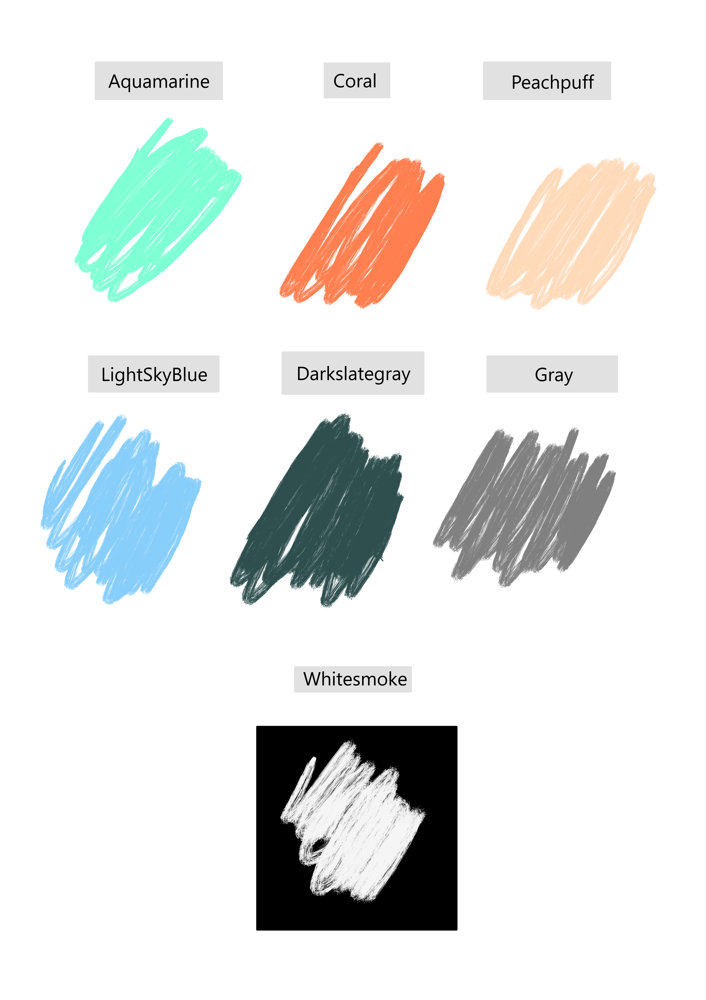

X
X
My goal with this website was to make something that is both simple but impactful at the same time.


My two main inspirations: Apple and Comp Con.
For my website, I'm using a Google font known as Quicksand, which gives the site a professional feel while still keeping things light thanks to a solid line weight but a lack of sharp edges. The lack of sharp edges also aligns with the more rounded feel I want for the site. I increased the standard font size across the whole website, since I felt that the standard font is too small and hard to read, and is thus an accessibility issue.
For my color palette, I have two: A UI palette, which consists of whitesmoke, darkslategray, gray and black, and a page palette, which I use to break the site up into distinctive blocks. This second palette consists of four colors: Aquamarine, Coral, Peachpuff and Lightskyblue. All of these colors are bright enough to give the site some vibrancy, but not so bright as to overwhelm the user. My primary inspiration for doing this was the Comp/Con companion app for the boardgame lancer, which is pictured above. Comp/Con is a bit more dynamic, but I liked the idea of using impactful colors to make the site pop more. I wanted to make something that is pleasent to look at, without being to minimal or maximal
For the shapes used in my site, I generally stuck with rounded edges, since those make the site less aggressive and feel more personal with their friendlier feel. By doing this, the site can better serve as a portfolio that’s simply meant to be browsed through, rather than something formal that must be used purely to reach a goal and nothing more.
Making this website was very much a learning experience for me. When I started it, I knew nothing about HTML. Now I know a little more, but I’m still learning. The first and most important thing I did learn, however, is to bring over my most important lesson from every other bit of code I’ve ever written: make it scalable. If you look closely at this site and get into the actual HTML of it, you will quickly find that I have reused a lot of CSS and code throughout the site. Because it makes no sense to redo everything every time, especially when you’re trying to make a coherent website with a consistent style.
Besides the more modular approach I started taking to the website about 1/8th of the way through, the other thing of note I did throughout this phase of the project is I made an awesome piece of code that automatically builds galleries for my pages, using the code from one of our weekly exercises as a starting point. Doing this may have been a little work to set up, but it now means I can very easily and concisely build my galleries in other areas of my site as I need to while just using one script. It’s also a good bit of future proofing, since if I were to ever plug this site into a proper database, I could very easily pull galleries from that in future, which is something I did on the advice of my father who works in IT.
Moving into the second assignment, I've practically been a different designer. I've learnt a lot more about what HTML, JS and CSS can and can't do (not that there's anything they can't do, moresoe they aren't great at everything) and more importantly I've become willing to learn from sources outside of Wits. MDN web docs have been hugely useful for this, but in general I've vastly expaned my range of sources to deepen my learning and to allow me to build a faster, prettier and -most importantly- more responsive website that functions as intended on a range of devices.
Probably the simplest area for me, my goal is to provide a website that can serve as an area to display my work and projects. As such, all I need the user to do is to be able to move around the site as they want to or need to. In future, I may need to refine the site to sell myself a little more, should I wish to actually use the site professionally, but that’s a future problem for my future self.
One thing I did put some focus into is the layout of content. The requirements for the site did give me a good starting point with that, but I still tried to lay my information out in a logical hierarchy to make the website easier to navigate. This also helps the user to know what information of mine is the most important, which should let them understand my intentions as the creator a little better.
As mentioned before, I put a focus into this area. A big item of focus for me was my top bar. I wanted to follow a three click rule, which means that any area of my site should either be accessible from the top bar or from a page included in the top bar. This rule helped me to design a website that I think is easy to use, as well as responsive.
An area that’s a little weird for me to map. On the one hand, my website has been designed for easy navigation. On the other hand, there is little to no actual user interaction on my site currently beyond navigation, since I have very little need for fun features or complex product pages at this point in the process of making the site.
That said, I’ve still made a basic diagram to map out my user flow (and to prove that my site follows the three click rule), which can be found at the gallery at the bottom of this page.
Currently, the only interface elements I have on this site are buttons and the occasional link. These all follow a standardized style I set based on my top bar, with specific attention being given to make sure everything gives proper user feedback when they interact with said elements. One particularly conscientious decision I made when it comes to interface elements is giving the links to albums on the profile page an effect to let the user know they’re interactive, because otherwise it may be easy to miss them. I have also added a "return to top" function since the first assignment, which irons out a few more wrinkles in the process of navigating the site.